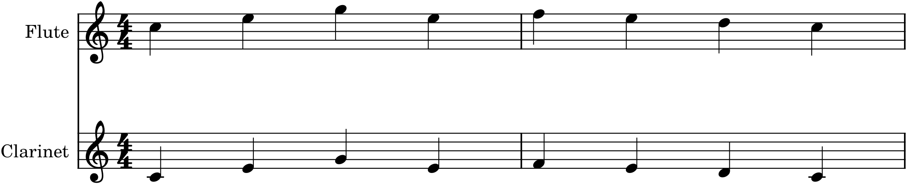
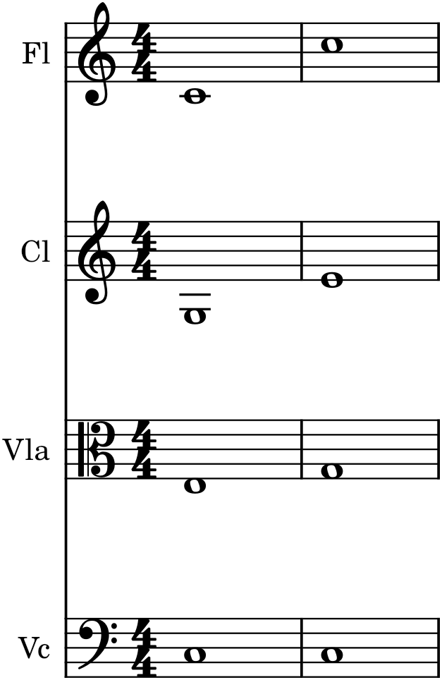

The last three chapters looked at instruments one at a time — their families, their ranges, their registers. This one puts them together, which is where the real decisions of instrumentation live. Whenever more than one instrument sounds at once, you must choose how to distribute the notes among them: which instrument plays which line, whether two instruments share a line (doubling), and how a chord is spaced across the group (voicing). Do this well and the ensemble sounds clear, rich, and balanced; do it carelessly and it turns to mud, or the instruments collide into an indistinct smear. This chapter is the practical craft of combining instruments cleanly — and the bridge into the orchestration of Part 7.
34.1Doubling
Doubling means two (or more) instruments playing the same line together. You double for three reasons: to strengthen a line (two instruments on the melody are louder and more present than one), to balance it (a doubled melody can rise above a thick accompaniment), and — most interestingly — to blend colours (a flute and a violin on the same melody fuse into a new, composite timbre that is neither quite flute nor quite violin). Doubling is one of the orchestrator’s most basic and powerful tools, and the simplest form is two instruments in unison — the very same notes — reinforcing each other.
34.2Octave doubling
More common, and more brilliant, is doubling at the octave: the two instruments play the same line an octave apart rather than in unison.

The octave doubling in Figure 34.1 enriches the melody — giving it body and reach — while adding no new harmony, since the octave is the most consonant interval and the two lines are heard as a single reinforced melody. You can double at two octaves, or in several octaves at once for a blazing full-orchestra tune. Octave doubling of the melody is so useful and so common that it is nearly a reflex; whenever a line needs more presence, doubling it an octave up or down is the first thing to try.
34.3Colour through doubling
Doubling is not only about strength; it is a way to mix colours. Instruments within a family blend almost completely — two violins, or a flute and a clarinet, merge into one enriched sound — while combining instruments across families creates a composite timbre with characteristics of both: an oboe doubled by a violin has the oboe’s reediness softened by the violin’s warmth; a flute doubled by a clarinet is rounder than either alone. This is how orchestrators invent colours that no single instrument possesses. The choice of what to double a line with is therefore a choice of colour, and a large part of the art of orchestration is exactly this — building the timbre you want by combining the instruments that, together, produce it.
34.4Voicing a chord across instruments
When the instruments play harmony rather than a shared line, the question becomes voicing: which instrument takes which note of the chord, and how the chord is spaced across the group. The principles are the ones you already know from four-part writing (Chapter 14) and piano writing (Chapter 27), now applied across instruments: keep the low notes open and the upper notes closer together, give each instrument a chord tone in a register where it sounds well, and put the bass — the lowest, most spacious interval — in the lowest instrument.

The contrast in Figure 34.2 is the whole lesson of voicing in one picture. The muddy version crowds every instrument into the low-middle register, where the close thirds clash and the flute sits uselessly in its weak bottom; the clear version gives the chord room — open at the bottom, the upper voices in their comfortable registers — and it rings. Good voicing is mostly this: spread the chord out, keep the bottom open, and put each note where its instrument sounds best.
34.5Avoiding mud and collision
Two failures haunt ensemble writing, and both are avoidable. Mud comes from too much activity, or too-close spacing, low down — the low-middle register is where sound turns thick and indistinct, so crowding chords or busy inner parts there produces a growling blur (the left side of Figure 34.2). Keep the low register clean: open spacing, few notes, nothing fast or fussy. Collision comes from two instruments occupying the same register without a clear reason, tangling around each other so the ear cannot separate them; give each instrument its own space, and if two must share a register, make sure one is clearly the melody and the other clearly support. The remedies for both are the same handful of habits: spread the harmony across a wide span, keep the bass open and low, reserve the muddy low-middle for sparse writing, and give every instrument a clear register and role.
34.6The end of the primer
That completes the instrumentation primer. You now know the four families and how each makes its sound (Chapter 31); how to read and handle transposing instruments (Chapter 32); where each instrument sounds its best (Chapter 33); and how to combine instruments by doubling and voicing without mud or collision (this chapter). This is the practical knowledge that turns “notes on a staff” into music that real players can play and that sounds the way you intend. It is not the whole of orchestration — that is the subject of Part 7, and of a lifetime — but it is the foundation on which orchestration is built, and it is enough to score real music for a real ensemble. In the next part, we put it all to work: composing not merely for instruments but with them, treating timbre itself as a compositional element, and scoring a piece for a small orchestra.
In MuseScore
Doubling and voicing are best judged by ear, and MuseScore lets you hear every choice instantly.
- Double a line by copying it (Ctrl+C) onto another instrument’s staff and, for octave doubling, transposing the copy up or down an octave (Ctrl+↑/↓). Play it and hear the line gain body; try doublings within a family (blend) and across families (composite colour) and compare.
- Voice a chord across the instruments, then listen to the low register — if it sounds thick or growling, spread the chord: move inner notes up, leave a single open note in the bass. Compare a crowded voicing with a spread one, as in Figure 34.2.
- Check registers with the range colouring (Chapter 33) so no instrument is stuck in a weak or muddy part of its range.
- Use the Mixer (F10) to balance, and mute instruments to hear how each contributes.
Try it: take a simple chord and voice it for four instruments twice — once crowded into a low octave, once spread across two octaves with the root alone at the bottom — and play both, as in Figure 34.2. The muddy version and the clear one use the same notes; hearing the difference is hearing the craft of this whole part. Then double a melody in octaves across two instruments and hear it bloom. You are now ready to orchestrate.